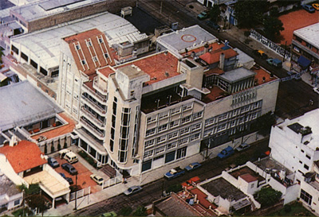

MAPAS DE HOSPITALES
LOS HOSPITALES DISPONIBLE SON:

HOSPITAL DE LOS CEDROS
POPUP
Localidad: San Justo, Provincia de Buenos Aires
Direccion: Av. Pres. Dr. Arturo Umberto Illia 2275
HOSPITAL PAROISSIEN
POPUP
Localidad: Isidro Casanova, Provincia de Buenos Aires
Direccion: Avenida Brigadier General Juan Manuel de Rosas 6000
HOSPITAL BALESTRINI